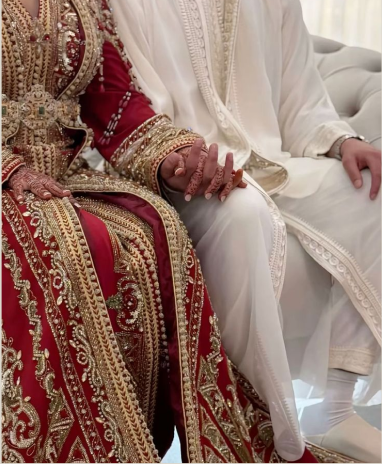
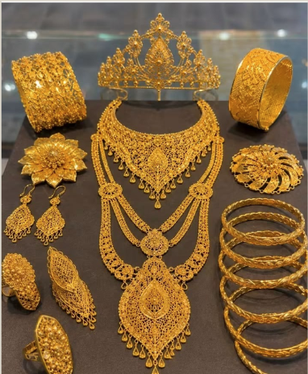
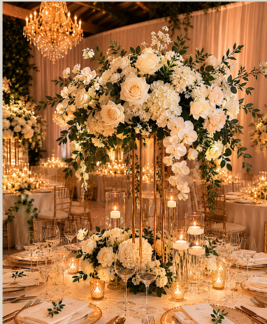
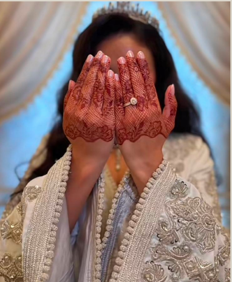

THE MULTICULTURAL WEDDING EXPERIENCE
Where Love
Meets Culture
En verden af kærlighed, traditioner og uforglemmelige øjeblikke.
Oplev vores univers

Bridal fashion
Oplev smukke brudekreationer, hvor moderne elegance møder kulturelle traditioner.

Traditions in Gold
Udforsk unikke smykker, der fortæller historier om kultur, arv og tidløs skønhed.

Floral & Decor elegance
Find inspiration i romantiske blomsterdekorationer og smukke detaljer, der skaber magiske øjeblikke.

Cutural traditions
Oplev mangfoldigheden af bryllupstraditioner, hvor kærlighed og kultur forenes.
Om Layali
LAYALI er mere end en bryllupsmesse. Det er en inspirerende oplevelse, hvor forskellige kulturer, traditioner og moderne bryllupstrends mødes. Uanset om du planlægger dit drømmebryllup eller blot elsker smukke smykker, mode og kreative dekorationer, inviterer LAYALI dig indenfor i et univers fyldt med inspiration og nye oplevelser.
Udforsk messeområdet
Gå på opdagelse i et univers af smykker, brudemode og blomsterdekorationer. Se, hvad der venter dig på messen.
Udforsk messen